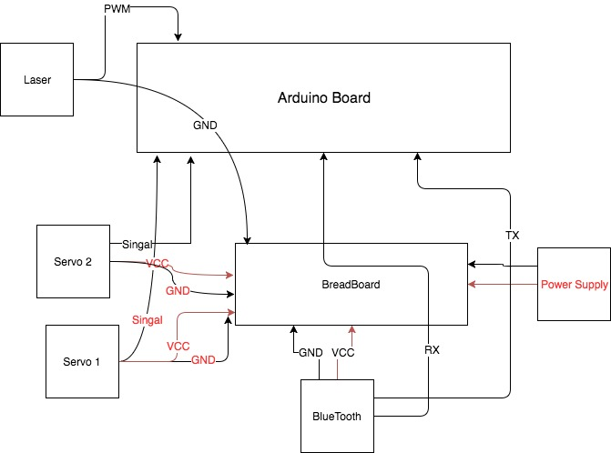
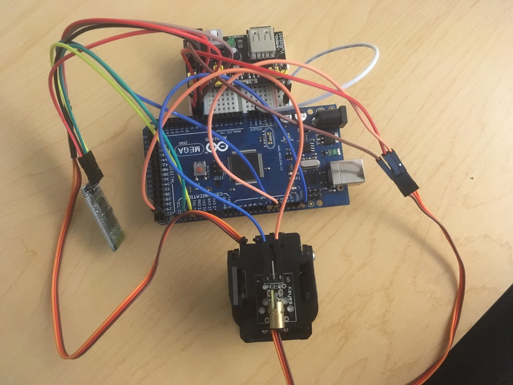
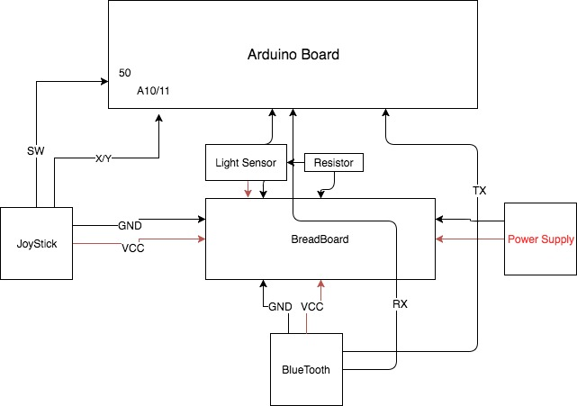

Phase 2 of the project requires the following components to be connected onto a base station and a remote station:
One ATMega 2560 board
Two servos
One AC adapter
One pan-and-tilt kit
One joysticks
One laser pointer
One light sensor
One LCD display
Many wires
Two HC-06 bluetooth modules
One Roomba robot
The overall design for phase 2 was to separate the single station into a base station and a remote state, and build a connection between the two stations through Bluetooth. In addition, time-triggered architecture(TTA) is used in order to have smooth control of our system for phase 2. TTA sets up a specific period for each task instead of setting up a single delay for all components. However, users need to find out an ideal period for a specific task.
The remote station controls the motion of the pan-and-tilt kit, and turns laser on or off through bluetooth communication. A Slave Mode bluetooth is attached to the remote station to receive the formatted joystick values from base station, details about bluetooth communication will be discussed in the later section. After separating into two stations, wiring for each station becomes much simpler. The following diagram 4.1.1.1 shows the wiring of the remote station.
Figure 4.1.1.1 Circuit Diagram for Remote Station
Figure 4.1.1.2 below shows the final assembly of remote station. The circuit was a lot cleaner than the phase 1 circuit.
Figure 4.1.1.2. Final Assembly of Remote Station
For phase 2, there is another remote station we need to send control signal to, that is the Roomba robot. We need to demonstrate we can control both servos and Roomba remotely; however, the Roomba robot has already mounted the teaching assistant’s Arduino board which is loaded with a Real-Time Operating System(ROTS) to handle communications and drive the Roomba, so we can not mount our own remote station to the Roomba. Due to the limitation of 2 bluetooth modules, we demonstrated controlling servos and Roomba through bluetooth separately.
The base station is a command sender that uses TTA to send commands with a specific scheduled time period. The Master Mode bluetooth module is attached to the base station to send commands to the slave module. The joystick is attached, and remotely control the movement of pan-and-tilt kit servos. Joystick connects to two analogs pins for x y values, and one digital pin for button push. The light sensor is also attached to breadboard, detected if the laser is pointed at base station. The following Figure 4.1.2.1 shows the high level circuit diagram of the base station.
Figure 4.1.2.1 Circuit Diagram for Base Station
The following Figure 4.1.2.1 shows the final completion of Base Station for phase 2.
Figure 4.1.2.1 Base station with joystick
The easy part of bluetooth communication is that once two modules(master and slave) are correctly configured, they will be automatically paired when both of them are powered up and within a searchable range. When the modules are paired up, sending data to another station will be just writing data to the UART ports that the bluetooth module is connected to. An Arduino library function Serial.write() is mainly used to send commands.
Sending commands to the Roomba station is easier, because the Roomba station only receives single character as commands. The Serial.write() function we used can only send one character at a time, which works for sending Roomba commands. Whereas the servos remote station requires multiple input values(x,y, and button push), the input values are decided to be formatted into a string. Sending a string using the Serial.write() function became troublesome, therefore, another approach is used instead.
Reading the joystick values sent from the base station takes several steps(see Figure 4.2.1 for remote station code):
1. Format string on base station, each value is separated by a comma, and string ends on a ‘\n’ characterFigure 4.2.1
Another problem that we encountered for bluetooth communication was a timing problem. When the base station send commands at a rate that is faster than the remote station receive rate, significant delay or unexpected behaviors will happen. Therefore, we must ensure that sending rate is less than receiving rate. But only using a delay() function cannot guarantee the sending or receiving rate, some code may run faster or slower than others, so we cannot rely on the delay() function. Using Time Triggered Architecture solved this problem, details will be discussed in the following section.
Using TTA is very critical and significant in this project, as it can schedule tasks periodically in a very precise manner. Unlike the delay() function the TTA’s Scheduler_StartTask() function[3] can schedule tasks to be executed at precise time periods, which guarantees the running rate of each task and makes the system more deterministic.
When testing with sending commands to the Roomba using TTA with period 10ms, we experienced about 4 seconds delay between moving the joysticks and observing the response movement from the Roomba. The problem was caused by sending commands too quickly, there are delays for data to transfer through bluetooth, and delays for the Arduino command to the Roomba. Therefore, we must consider these latencies and should not send commands faster than the total latency, otherwise, there will be more command sending to the Roomba than it can handle, and buffer overflow will occur. After testing, we decided that using the period of 30ms is ideal, Roomba’s receiving rate is faster than sending rate and latency between joystick movement and Roomba movement cannot be sensed by human eyes.
Using TTA also helps with smoothing servo movements, because it can be used to schedule tasks to run very frequent. However, running tasks too fast isn’t good at all because it will waste cpu cycles and increase power consumption.